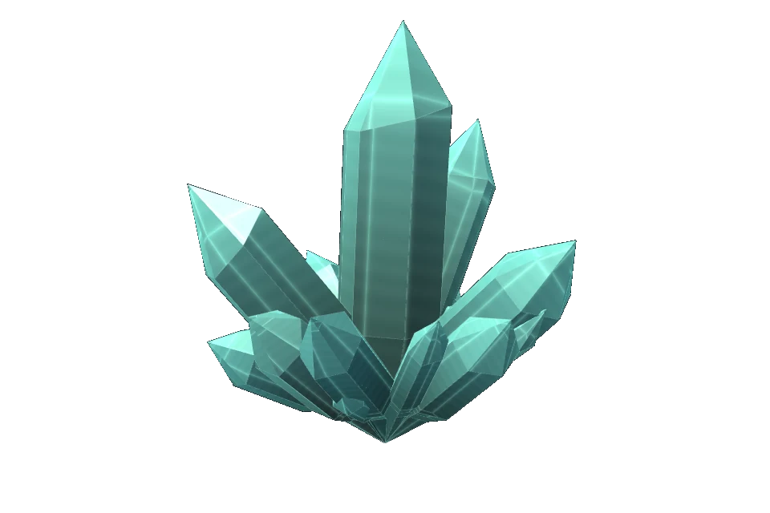

PLANET / NATURWISSENSCHAFT
Die frühe Erde
Von der Proto-Erde in 3D bis zur geologischen Zeitskala: Erdgeschichte zoomen, erforschen und mit täglichen Übungen lernen.
Interaktive Experimente, wissenschaftliche Modelle und Atlanten – unabhängig voneinander, frei zugänglich und verbunden durch Neugier.
Du brauchst kein Vorwissen. Wähle ein Thema, stelle Fragen und finde heraus, wie die Dinge zusammenhängen.

8 Projekte
PLANET / NATURWISSENSCHAFT
Von der Proto-Erde in 3D bis zur geologischen Zeitskala: Erdgeschichte zoomen, erforschen und mit täglichen Übungen lernen.
CHEMIE / URSPRUNG DES LEBENS
Sechs interaktive Lernstationen: präbiotische Chemie, Molekülbausteine, Protocellen, RNA, Ursprungshypothesen und wissenschaftliche Evidenz.
BIOLOGIE / MOLEKÜLE
Genetische Information verstehen: DNA, RNA, Replikation, Transkription, Translation und Mutationen.
BIOLOGIE / ZEIT
Sechs interaktive Lernlabore: Populationsgenetik, Genfluss, Stammbäume, LUCA, biologische Übergänge und Evolutionsbelege.
ANTHROPOLOGIE / URSPRÜNGE
Sechs interaktive Unterlabore: Homininen-Zeitreise, Stammbaum, aufrechter Gang, Werkzeuge, Ausbreitungen und Evidenz.
GESCHICHTE / KARTEN / ZEIT
Menschen, Orte, Quellen und historische Reisen auf interaktiven Karten und Zeitleisten entdecken.
MENSCHEN / BIOGRAFIEN / ZEIT
Lebenswege aus Wissenschaft, Philosophie, Politik und Kunst vergleichen: Kategorien kombinieren, Biografien lesen und Werke, Beiträge sowie Quellen entdecken. Auf Deutsch und Englisch.
MATHEMATIK / BEWEISE
Folge mathematischen Beweisen Schritt für Schritt. Entdecke in der Mindmap, wie Begriffe und Sätze aus der Mathematik zusammenhängen.
Versuche einen anderen Suchbegriff oder setze die Filter zurück.
Eine Wissensreise ist eine Einladung, kein Lehrplan. Die Reihenfolge ist nur ein möglicher Weg durch verwandte Themen.
Der Anthropology Atlas ergänzt die Reise: Er verbindet Menschen, Orte, Quellen und Ereignisse in der historischen Zeit.
Die Websites sind bewusst einfach aufgebaut. Ihr Wert liegt nicht in einer gemeinsamen Plattform, sondern in der Möglichkeit, etwas selbst zu verstehen.
Jedes Labor ist eine eigenständige Website mit eigenem Repository. Es benötigt kein anderes Labor, um zu funktionieren.
Nicht nur lesen: ansehen, Hypothesen aufstellen, Parameter verändern und beobachten, was passiert.
Frei zugänglich, quelloffen und bewusst unvollendet – ein Ort für persönliche Neugier und neue Fragen.